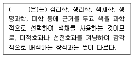
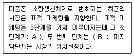
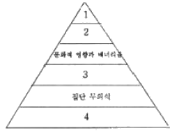
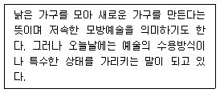
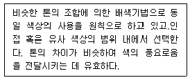
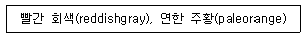
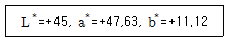
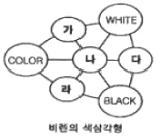
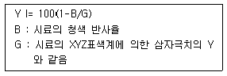

컬러리스트기사 (2009-07-26 기출문제)
1과목: 색채심리 마케팅
1. 색채기호 조사분석 과정에 맞지 않는 것은?
- 소비자의 생활에서 일관된 기호 이미지를 찾는다.
- 소비자가 지향하는 라이프스타일을 추출한다.
- 소비자의 생활 지역에 대한 객관적인 자료를 먼저 수집한다.
- 소비자가 선호하는 이미지를 유형별로 분류한다.
(정답률: 알수없음)

2. 다음 중 라이프 스타일에 관한 설명 중 틀린 것은?
- 소비자가 어떤 방식으로 시간과 재화를 사용하면서 세상을 살아가는 가에 대한 선택의 의미이다.
- 라이프 스타일에 따른 소비자 시장의 연구는 소비자가 어떤 활동, 관심, 의견을 가지고 있는가를 중심으로 이루어진다.
- 라이프 스타일은 소득, 직장, 가족 수, 지역, 생활주기 등을 기초로 분석 된다.
- 라이프 스타일은 사회의 변화에 관계없이 개인의 가치관에 따라서 변화된다.
(정답률: 알수없음)
3. ( )안에 들어갈 알맞은 용어는?

- 안전색채
- 색채연상
- 색채조절
- 색채조화
(정답률: 알수없음)
4. 색의 연상과 상징,효과에서 보라색의 의미는?
- 안식, 안전, 평화, 지성, 건실을 의미
- 우미, 신비, 예술, 위엄을 의미
- 열정적이고 관능적이며 공격성을 가짐
- 소극적인 성격, 안정성 또는 우울한 이미지를 지님
(정답률: 알수없음)
5. 현재는 특정욕구를 충족시켜주는 동일 카테고리의 타 제품을 사용하고 있지만 잘 관리 하면 자가제품으로 전환이 가능한 구매자 그룹군은?
- 시장세분화 구매자
- 연령별 구매자
- 잠재적 구매자
- 고정 구매자
(정답률: 알수없음)
6. 괄호(A), (B)안에 들어갈 내용은?

- A : 시장 차별화, B : 시작 표적화
- A : 시장 집중화, B : 시작 차별화
- A : 시장 세분화, B : 시작 확대화
- A : 시장 세분화, B : 시작 표적화
(정답률: 알수없음)
7. 마케팅 믹스에 대한 설명이 틀린 것은?
- 제품에 대한 수요에 영향을 주기 위해 기업이 시장에서 자극요소로 활용할 수 있는 모든 수단을 활용하는 것이다.
- 마케팅의 4P는 마케팅 믹스의 기본적 요소이다.
- 마케팅의 4P는 제품(product), 가격(price), 구매(purchase), 유통구조(Place)이다.
- 감성적, 경험적 마케팅 등은 창의적인 마케팅 믹스를 개발하기 위한 방법이다.
(정답률: 알수없음)
8. 몬드리안(Mondrian)의 ‘브로드웨이 부기우기’라는 작품에서 드러난 대표적인 색채 현상은?
- 착시
- 색채와 소리의 공감각
- 항상성
- 음성 잔상
(정답률: 알수없음)
9. 색채의 공감각에 대한 내용으로 틀린 것은?
- 공감각은 색채와 다른 감각간의 교류 현상이다.
- 공감각은 자극받은 하나의 감각이 다른 감각에 적용되어 반응한다.
- 색채와 맛, 모양, 향, 촉감 등 간에 동일한 메시지를 전달할 수 없는 언어로서의 한계가 있다.
- 색채가 지닌 공감각의 특성을 활용하면 메시지와 의미를 보다 정확하고 강하게 전달할 수 있다.
(정답률: 알수없음)
10. 우리나라 산업규격에 따른 안전색의 일번적인 의미로 틀린 것은?
- 빨강 - 화재 안전
- 노랑 - 금지
- 초록 - 안전 유도
- 파랑 - 지시
(정답률: 알수없음)
11. 소비자 행동에 영향을 미치는 사회적 요인 중 하나로 개인의 태도나 의견,가치관에 영향을 미치는 집단을 무엇이라고 하는가?
- 거주집단
- 준거집단
- 동료집단
- 희구집단
(정답률: 알수없음)
12. 제품의 포장에 사용된 색채가 소비자들로 하여금 내용물이 무엇인지 알 수 있게 돕는다면,색채는 어떤 역할을 하고 있는 것이가?
- 국제 언어정보
- 사회·문화정도
- 공감각 정보
- 제품정보
(정답률: 알수없음)
13. 어느 특정한 지역의 요소들과 자연스럽게 어울리고 선호되는 색채를 지역색이라고 부른다. 다음 중 지역색에 영향을 주는 요소와 거리가 먼 것은?
- 하늘
- 사람
- 흙
- 습도
(정답률: 알수없음)
14. SD법의 첫 고안자인 오스굿은 요인분석을 통해 의미공간의 대표적인 구성요인을 밝혀냈는데 다음 중 그 요인이 아닌 것은?
- 평가요인
- 역능요인
- 활동요인
- 심리요인
(정답률: 알수없음)
15. 프랭크 H.만케의 6단계 색경험 피라미드에서 번호에 맞지 않은 것은?

- 1 : 개인적 관계
- 2 : 시대사조,패션 스타일의 영향
- 3 : 의식적 상징화 - 연상
- 4 : 색 자극에 대한 심리학적 반응
(정답률: 알수없음)
16. 매슬로우(Maslow)는 인간의 욕구가 다섯계층으로 구분된다고 설명하였다. 이 욕구 단계에 해당하지 않는 것은?
- 생리적 욕구
- 사회적 욕구
- 자아실현 욕구
- 필요의 욕구
(정답률: 알수없음)
17. 우리나라 청자의 상징색을 색 이름으로 바르게 나타낸 것은?
- 취색(翠色)
- 비색(翡色)
- 자색(紫色)
- 청색(靑色)
(정답률: 알수없음)
18. A회사의 광고팀은 Y상품을 광고하려고 미팅을 가졌는데 다음 중 옳지 않은 의견은?
- 신입사원 B는 “DM광고는 전략성이 적고 소구대상이 불명확하다. ”며 부정적으로 보았다.
- C대리는 “신문광고는 매우 적시적이고 탄력적 광고가 가능하다. ”고 주장하였다.
- 사원 D는 “잡지광고가 감정적,분위기 조성적인 소구가 가능하여 좋다. ”는 의견을 제시 했다.
- 팀장 E는 “TV광고는 호소력이 강하기 때문에 가장 생동적이다. ”이라 했다.
(정답률: 알수없음)
19. 색채 정보수집 설문지 조사를 위한 조사자 사전교육에 관한 내용과 가장 거리가 먼 것은?
- 조사의 취지와 표본 선정 방법에 대한 이해
- 조사 자료의 분석 방법
- 면접과정의 지참
- 참가자의 응답에 영향을 주지 않도록 하는 중립적이고 객관적인 태도 유지
(정답률: 알수없음)
20. 형광등 또는 백열등과 같은 다양한 조명아래에서도 사과의 빨간색이 달리 지각되지 않는 현상을 무엇이라 하는가?
- 착시
- 색채의 주관성
- 페흐너 효과
- 색채 항상성
(정답률: 알수없음)
2과목: 색채디자인
21. 다음 중 대비의 개념을 갖지 않는 것은?
- 직선과 곡선
- 청색과 녹색
- 투명과 불투명
- 두꺼움과 얇음
(정답률: 알수없음)
22. 색과 빛에 대한 설명으로 틀린 것은?
- 인간이 볼 수 있는 가시광선의 파장은 약 380~780nm이다.
- 빛은 파장에 따라 서로 다른 색감을 일으킨다.
- 빛은 파장이 다른 전자파의 집합인 것을 처음 발견한 사람은 요하네서 잇텐(JohanessItten)이다.
- 여러가지 파장의 빛이 고르게 섞여 있으면 백색으로 지각된다.
(정답률: 알수없음)
23. 기존제품의 재료나 기능 또는 형태를 개량하고 개선하는 것은?
- 트랜드 디자인(trenddesign)
- 리디자인(re-design)
- 이미지 디자인(imagedesign)
- 혁신 디자인(advanceddesign)
(정답률: 알수없음)
24. 다음이 설명하는 디자인 사조는 무엇인가?

- 다다이즘
- 아르누보
- 포스트모더니즘
- 키치
(정답률: 알수없음)
25. 사회 캠페인 매체로서 목적하는 바에 따라 대중을 설득하거나 통일된 행동을 유도하는 포스터는?
- 관광포스터
- 공공 캠페인 포스터
- 문화생사 포스터
- 상품광고 포스터
(정답률: 알수없음)
26. 소매점 점포, 점두에 사용하는 광고 메시지로, 구매자는 물론 통행인의 구매행위에 영향을 주는 것은?
- POP
- CIP
- PHP
- CSS
(정답률: 알수없음)
27. 공공환경에서 대상에 따른 색채적용 시 고려해야 할 조건이 아닌 것은?
- 대상과 보는 사람과의 거리
- 선호도
- 면적효과
- 공공성의 정도
(정답률: 알수없음)
28. 다음이 설명하는 배색방법은?

- 톤온톤(oneonTone)배색
- 톤인톤(ToneinTone)배색
- 카마이외(Camaieu)배색
- 비콜로(Bicolore)배색
(정답률: 알수없음)
29. 네델란드에서 일어난 신조형주의 운동으로,화면을 정확한수평, 수직으로 분할하고 3원색과 무채색을 이용한 구성이 특징인 디자인 사조는?
- 큐비즘
- 데 스틸
- 바우하우스
- 아르데코
(정답률: 알수없음)
30. 시각 디자인 요소에 대한 설명으로 틀린 것은?
- 점(point)은 형태의 가장 기본적인 생성원이며, 공간에서 위치를 정의하고 결정하는데 이용된다.
- 선(line)은 방향이나 굵기, 모양 등에 의해 다양한 시각적느낌을 만들어 낼 수 있다.
- 형태(form)는 면으로 구성되어지며 공간과 질감을 갖고 있다.
- 색채(color)는 하나의 단색만으로도 그 색의 가치를 결정할 수 있으며 변화와 조화를 가질 수 있다.
(정답률: 알수없음)
31. 검정색과 노란색을 사용하는 교통 표시판은 색채의 어떠한 특성을 이용한 것인가?
- 색채의 연상
- 색채의 명시도
- 색채의 심리
- 색채의 이미지
(정답률: 알수없음)
32. 문화와 언어를 초월해서 직관적으로 이해 할 수 있도록 한 그림문자로서의 그래픽 심볼은?
- 픽토그램
- 다이어그램
- 일러스트레이션
- 타이포그래피
(정답률: 알수없음)
33. 기계가 지닌 차갑고 역동적 아름다움을 조형 예술의 주제로 까지 높였다는 것과 스피드 감이나 운동을 표현하기 위해 시간의 요소를 도입하려고 시도한 예술 운동은?
- 구성주의
- 옵아트
- 미니멀리즘
- 미래주의
(정답률: 알수없음)
34. 시각디자인에 관한 내용으로 타당하지 않은 것은?
- 시각 디자인의 역할은 의미전달보다는 감성적 만족을 주는것이 가장 중요하다.
- 시각 커뮤니케이션에 있어 색채는 매우 중요한 역할을 하는 디자인 요소이다.
- 시각 디자인은 일차적으로 시각적 흥미를 불러일으킬 필요가 있다.
- 시각 디자인의 매체는 인쇄매체에서 점차 영상매체로 확대되고 있다.
(정답률: 알수없음)
35. 근대디자인의 역사에 지대한 영향을 끼친 바우하우스 디자인학교는 언제 설립되었는가?
- 1909년
- 1919년
- 1925년
- 1937년
(정답률: 알수없음)
36. 시각적으로 조화롭게 만들어주는 방법으로 반복, 인접, 연속 등을 적용하는 디자인의 원리는?
- 통일감
- 무게감
- 비례감
- 대칭성
(정답률: 알수없음)
37. 패션디자인 분야의 유행색에 대한 개념이 틀린 것은?
- 일정기간을 갖고 주기적으로 반복된다.
- 특정시기에 더 선호하게 되는 색이다.
- 패션 유행색은 다른 분야에 비해 비교적 느리게 변한다.
- 색채전문기관에 의해 유행색의 예측되기도 한다.
(정답률: 알수없음)
38. 병원 색채계획 시 고려사항으로 거리가 먼 것은?
- 병실은 안방과 같은 온화한 분위기
- 수술실은 정밀한 작업을 위한 환경 조성
- 일반 사무실은 업무효율성과 조도 고려
- 대시길은 화려한 색채적용과 동선체계 고려
(정답률: 알수없음)
39. 아르누보 양식을 건축자체에 도입시켜 자연주의적인 환상적인 공간 연출을 하였으며 사그라다 파밀리아교회, 구엘공원이 대표작인 스페인 건축가는?
- 미스 반 데 로에
- 안토니오 가우디
- 루이스 칸
- 후랑크 로이드 라이트
(정답률: 알수없음)
40. 형태와 기능,미적인 것과 기능적인 것으로 디자인 복합기능을 설명한 빅터 파파넥(VictorPapanek)의 다음 용어의 설명으로 틀린 것은?
- 텔레시스 : 특수한 목적을 달성하기 위한 자연과 사회의 변천 작용에 대한 계획적이고 의도적인 실용화를 의미함
- 미학 : 우리를 아름답고 흥미롭고,기쁘게 하며, 우리를 감동시켜 의미있는 실체를 만듬
- 연상 : 인간이 지닌 보편적 가치로서, 인간의 마음 속 깊이 자리잡고 있는 충동과 욕망에 관계됨
- 방법 : 경제적, 심리적, 정신적, 기술적, 지적인 요구가 복합된 디자인의 필요와 관계됨
(정답률: 알수없음)
3과목: 색채관리
41. 안료(Pigment)에 대한 설명으로 틀린 것은?
- 무기안료와 유기안료로 구분되며,채색 후에 물이나 습기에 노출되더라도 색이 장기 보존되어야 한다.
- 합성안료는 안료 입자의 크기가 클수록 전체 표면적이 커져서 빛은 더 잘 반사하는 반면 산란은 일어나지 않는다.
- 원시인이 사용한 안료는 산화철, 산화망간, 목탕 등이다.
- 안료를 이용하여 채색하는 예로는 자동차의 내장 및 외장의 표면코팅, 유성 및 수성페인트 등이다.
(정답률: 알수없음)
42. 일반적인 도료의 분류에 있어 각 도료 타입별 특징이 잘못된 것은?
- 에폭시 수지도료 : 주로 옥상 등의 방수 목적으로 사용되며, 도박의 경도를 다향하게 조절할 수 있다.
- 에멀젼 수지도료 : 수성페인트의 일종이다.
- 알키드 에나멜 수지도료 : 철재나 목재 등의 소지도장에 적합하며, 공기 중의 산소 성분과 반응하여 건조되는 산화 중합형 도료이다.
- 불소 수지도료 : 도막이 단단하고 장기적인 내후성 등이 우수한 고내후성 도료이다.
(정답률: 알수없음)
43. 색채를 선별하기에 적합한 조명조건으로써 반드시 필요한 것이 아닌 것은?
- 광원의 색온도가 높아야 한다.
- 광원의 연색지수가 높아야 한다.
- 조도가 충분해야 한다.
- 간접조명이어야 한다.
(정답률: 알수없음)
44. 다음 중 육안조색 시 필요한 사항이 아닌 것은?
- 조색시 기준 광원을 명기한다.
- 광택이 변하는 조색의 경우 광택기를 필요로 한다.
- 결과의 검사는 3인 이상이 같이 하는 것이 좋다.
- 자연광을 가급적이면 이용한다.
(정답률: 알수없음)
45. 육안검색 측정에 대한 설명으로 맞는 것은?
- 육안검색의 측정각은 관찰자와 대상물의 각을 45도로 한다.
- 인공광원은 좋지 못하다.
- 비교하는 색은 멀리 배열한다.
- 직사광선이 육안 검사에는 좋다.
(정답률: 알수없음)
46. 육안으로 채도가 강한 색채를 오래 관측하다가 새로운 색채시료를 관측하면,관측했던 색상의 보색 방향으로 잔상이 나타나 다르게 보일 때의 색채 관측시 가장 좋은 방법은?
- 회색을 장시간 응시하거나 눈을 감고 잔상이 사라질 때까지 기다린다.
- 보색이 되는 색을 2~3분 바라본다.
- 동일 색상의 채도가 낮은 색을 응시한다.
- 동일 채도의 보색 색상을 약 5분간 응시한 다음 흰색을 바라본다.
(정답률: 알수없음)
47. 색에 관한 용어의 설명 중 틀린 것은?
- 휘도순응 : 시각계가 시야의 휘도에 순응하는 과정 또는 순응한 상태
- 명순응 : 3cd·m2 정도 이상인 휘도의 자극에 대한 휘도순응
- 암순응 : 약 3cd·m2 정도 이하인 휘도의 자극에 대한 휘도순응
- 색순응 : 암순응 상태에서 시각계가 시야의 색에 순응하는 과정 또는 순응된 상태
(정답률: 알수없음)
48. 색채측정기에 대한 설명 중 잘못된 것은?
- 필터식 색채계는 색필터와 광검출기 등을 이용하여 삼자극치를 직접 측정한다.
- 분광식 색채계는 인간의 삼자극 효율함수와 기준 광원의 분광강도 분포를 사용하여 값을 산출한다.
- 색채측정 장치는 시료대,광검출기,전산장치로 구분할 수 있다.
- 분광식 색채계는 측정이 간편하여 현장에서의 색채관리나 이동형 색채계로 많이 활용된다.
(정답률: 알수없음)
49. 다음 중 색온도가 가장 낮은 것은?
- 주광색 형광등
- 백열등
- 정오의 태양
- 흐린날의 하늘
(정답률: 알수없음)
50. 한국산업규격(KS)와 관련이 없는 색채표시체계는?
- CIEXYZ
- Munsellsystem
- PCCS
- CIELAB
(정답률: 알수없음)
51. 다음 중 관측색채의 오차에 영향을 주는 요인으로 가장 거리가 먼 것은?
- 광원의 차이
- 주변 온도나 습도의 차이
- 관찰자에 따른 차이
- 크기(실물과 샘플)에 따른 차이
(정답률: 알수없음)
52. 스캐너로는 표현이 되나 프린터에서는 인쇄할 수 없는 색은어떠한 방법으로 가장 근접된 인쇄 색상으로 전환하는가?
- 이미지세터를 사용한다.
- 필름레코더를 이용한다.
- Gamut맵핑을 사용한다.
- 클립핑한다.
(정답률: 알수없음)
53. 다양한 광원과 시야에서는 색채값을 동시에 산출해 낼 수 있는 색채 측정기는?
- 분광식색채계
- 광전배증관
- RGB광학체계
- 필터식색채계
(정답률: 알수없음)
54. 3D컴퓨터 그래픽 작업 시 물체의 표현에 재질감을 처리하는 작업은?
- 모델링(Modeling)
- 렌더링(Rendering)
- 디지타이징(Digitizing)
- 매핑(Mapping)
(정답률: 알수없음)
55. 육안조색은 육안검색의 환경에서 이루어지는 조색을 말한다. 다음 중 육안 조색에 관한 설명으로 틀린 것은?
- 인간의 눈을 기준으로 조색하는 방법이므로 오차가 심하고 정밀도가 떨어진다.
- 기기의 도움 없이 소재의 제약을 받지 않고 조색할 수 있다.
- 메타메리즘을 제거할 수 있다.
- 컬러런트와 관계없이 직접 염료나 도료를 섞는 방식이다.
(정답률: 알수없음)
56. 색료를 구성하는 분자에서 원자를 사이의 결합에 따라 다른 색을 띄게 된다. 아래 설명 가운데 틀린 것은?
- 단일결합과 이중결합이 교대로 있는 공액결합의 경우 흡수 스펙트럼이 자외선 영역에 나타난다.
- 당근이 붉은 색을 띄는 것은 캐로틴 분자에 의한 것이다.
- 식물이 띄고 있는 녹색의 경우 포피린 클로로필 색소에 의한 것이다.
- 갑각류에서 보이는 푸른 색의 피는 구리 탈로시아닌 분자에 의한 것이다.
(정답률: 알수없음)
57. 곡선의 모양을 수학적 알고리즘으로 표현해 그래픽 구성이 간단하며 사이즈로 상대적으로 적어 3차원 게임이나 애니매이션등에서 사용되는 영상기술은?
- 래스터영상
- 모션캡춰
- 그리드영상
- 벡터그래픽
(정답률: 알수없음)
58. 사진, 로고 등의 이미지를 읽어 컴퓨터에서 편집 및 조작 가능한 디지털 파일로 저장하는 전자장치는?
- 스크린카운터
- 스캐너
- 잉크젯프린터
- 스팩크린
(정답률: 알수없음)
59. CIEL*a*b*색좌표계에 다음 색을 표기할 때 가장 밝은 노란색에 해당되는 것은?
- L*=0, a*=0,b*=0
- L*=+80, a*=0, b*=-40
- L*=+80, a*=+40, b*=0
- L*=+80, a*=0, b*=+40
(정답률: 알수없음)
60. 식물계 색소 중 틀리게 짝지워진 것은?
- 플라빈 - 황색
- 카사민 - 붉은색
- 알리자린 - 푸른색
- 플라보노이드 - 담황색
(정답률: 알수없음)
4과목: 색채지각론
61. 밤하늘의 별을 볼 때 정면으로 보는 것보다 곁눈으로 보는 것이 더 잘보이는 이유는?
- 눈의 망막이 맹점에는 광수용기가 없으므로
- 망막의 중심부에는 추상체만 있고,주변망막에는 간상체가 많이 분포되어 있으므로
- 추상체와 간상체가 각기 다른 해상도를 갖기 때문에
- 추상체에 의한 순응이 간상체에 의한 순응보다 신속하게 발생하기 떄문에
(정답률: 알수없음)
62. 인종에 따라 눈의 색깔이 다르게 보이는 것은 눈의 어느 부분때문인가?
- 각막
- 수정체
- 홍채
- 망막
(정답률: 알수없음)
63. 색음현상이란?
- 암순응 시에는 단파장이 민감하게 반응하고 명순응 시에는 장파장에 만감하게 반응하는 현상
- 조명의 강도가 바뀌어도 물체의 색을 동일하게 지각하는 현상
- 같은 주파장의 색광은 강도를 변화시키면 색상이 약간 다르게 보이는 현상
- 작은 면적의 회색이 채도가 높은 유채색으로 둘러싸였을 때, 유채색의 보색의 색조를 띠어 보이는 현상
(정답률: 알수없음)
64. 스펙트럼 분광색의 파장의 길이가 짧은 것에서 긴 순서로 바르게 나열된 것은?
- 노랑 ＜ 파랑 ＜ 주황
- 빨강 ＜ 초록 ＜ 보라
- 보라 ＜ 빨강 ＜ 노랑
- 파랑 ＜ 초록 ＜ 노랑
(정답률: 알수없음)
65. 색의 면적효과에 대한 설명으로 틀린 것은?
- 동일한 색이라도 면적이 커지면 명도가 감소된다.
- 동일한 색이라도 면적이 커지면 채도가 증가된다.
- 면적이 커질수록 색이 뚜렷해진다.
- 색견본을 보고 색을 고를 경우,완성 후 예상과 다르게 적용된다.
(정답률: 알수없음)
66. 다음 중 동화효과와 관련성이 없는 것은?
- 리프만 효과
- 줄눈 효과
- 베졸드 효과
- 전파 효과
(정답률: 알수없음)
67. 저녁이 되어 실내가 어두워지면 파란색이 보다 밝게 느껴진다. 이러한 현상을 무엇이라 하는가?
- 베졸드 브뤼케 현상
- 하만그리드 현상
- 애브니 효과 현상
- 푸른킨예 현상
(정답률: 알수없음)
68. 환경색채를 계획하면서 좀 더 부드러운 느낌이 되도록 색을 조정하려고 한다. 가장 적합한 방법은?
- 한색계열의 색을 사용한다.
- 채도를 낮춘다.
- 진출색을 사용한다.
- 명도를 낮춘다.
(정답률: 알수없음)
69. 빛의 파장에 대한 설명으로 맞는 것은?
- 약 450~500nm의 파장으로 파랑으로 보이게 된다.
- 여러 가지 파장의 빛이 고르게 섞여 있으면 검정색으로 지각된다.
- 약 400~450nm의 파장은 녹색으로 보이게 된다.
- 약 500~570의 파장은 노랑으로 보이게 된다.
(정답률: 알수없음)
70. 다음 3가지 색은 가볍게 느껴지는 색부터 무겁게 느껴지는 색 순서로 배열된 것이다. 잘못 배열된 것은?
- 빨강 - 노랑 - 파랑
- 노랑 - 연두 - 파랑
- 하양 - 노랑 - 보라
- 주황 - 빨강 - 검정
(정답률: 알수없음)
71. 색각 이상에 대한 다음 설명 중 틀린 것은?
- 2색형 색각자를 부분 색맹이라고 한다.
- 정상시각의 관측자를 3색형 색각자라고 한다.
- 색맹은 유전이다.
- 남성보다 여성의 경우 색맹의 비율이 더 높다.
(정답률: 알수없음)
72. 색채지각 반응효과에서 명시성이 가장 크게 영향을 미치는 속성은?
- 명도의 차이
- 채도의 차이
- 질감의 차이
- 색상의 차이
(정답률: 알수없음)
73. 일정한 색의 자극이 사라진 후에도 지속적으로 색의 자극을 느낄 때 나타나는 대비 현상은?
- 계시대비
- 보색대비
- 색상대비
- 채도대비
(정답률: 알수없음)
74. 임의의 2가지 색광을 어떤 비율로 혼색하면 색기미가 없는 백색광을 얻을 수 있다. 다음 중 이 혼합에 해당되지 않는 것은?
- red+cyan
- megenta+green
- yellow+blue
- red+blue
(정답률: 알수없음)
75. 헤링의 4원색설 색각이론 중에서 망막에 광화학 물질의 존재를 가정하였다. 그것이 아닌 것은?
- 황청 물질
- 적녹 물질
- 청녹 물질
- 백흑 물질
(정답률: 알수없음)
76. 중간 혼색에 대한 설명 중 잘못된 것은?
- 중간혼색의 대표적 사례는 직물의 디자인에서 발견된다.
- 중간혼색은 가법 혼색과 감법 혼색의 중간 과정에서 추출된다.
- 혼색된 결과는 밝기와 색에 있어서 원래 각 색지각의 평균값으로 나타난다.
- 컬러 텔레비전의 경우 중간혼색에 해당된다.
(정답률: 알수없음)
77. 명도 단계별로 색을 나열하면 명도가 높은 부분과 접하는 부분을 어둡게 보이고,명도가 낮은 부분과 접하는 부분은 밝게 보인다. 이것은 어떤 대비에 대한 설명인가?
- 명도대비
- 연변대비
- 동시대비
- 계시대비
(정답률: 알수없음)
78. 최대 시감도를 나타내는 파장은?
- 355nm
- 455nm
- 555nm
- 655nm
(정답률: 알수없음)
79. 다음 중 심리적으로 마음이 가라앉는 침정감을 유도하는 색은?
- 난색 계열의 고채도 색
- 난색 계열의 저채도 색
- 한색 계열의 고채도 색
- 한색 계열의 저채도 색
(정답률: 알수없음)
80. 때로는 따뜻하게,때로는 차갑게 느껴지는 중성색이 아닌 것은?
- 연두
- 보라
- 흰색
- 초록
(정답률: 알수없음)
5과목: 색채체계론
81. 다음 중 먼셀의 색채조화원리에 의거하였을 때,옳지 않은 것은?
- 중간채도u48148 (/5)의 반대색끼리는 같은 면적으로 배색하면 조화롭다.
- 중간명도(5/)의 채도가 다른 반대색끼리는 고채도를 좁게, 저채도는 넓게 배색하면 조화롭다.
- 채도가 같고 명도가 다른 반대색끼리는 명도의 단계를 일정하게 조절하면 조화롭다.
- 명도,채도가 모두 다른 반대색끼리는 고명도·고채도는 넓게, 저명도·저채도는 좁게 구성한 배색은 조화롭다.
(정답률: 알수없음)
82. 다음 제시된 색이름의 색명법은?

- 계통색명
- 기본색명
- 생활색명
- 관용색명
(정답률: 알수없음)
83. DIN과 관련하여 설명된 색채 특성 중 옳은 것은?
- 색상은 24개로 설계되었다.
- D,I,N의 3단위로 표시한다.
- 색상은 빨강이 1번으로 기준이다.
- 원래 채도는 10단계로 설계되었다.
(정답률: 알수없음)
84. NCS표색계에 따라 검정색을 표현한 것은?
- S⑤00-N
- S9900-N
- S0090-N
- S9000-N
(정답률: 알수없음)
85. 일본색채연구소가 색채조화 교육용으로 사용한 표색계는?
- PCCS표색계
- DIN표색계
- XYZ표색계
- NCS표색계
(정답률: 알수없음)
86. 음향오행사상에 따른 색채체계에서 다음 중 오정색(五正色)에 해당하지 않는 것은?
- 적색
- 황색
- 자색
- 백색
(정답률: 알수없음)
87. 색채표준의 조건이 아닌 것은?
- 특수 안료를 제외한 일반 안료로 재현 용이성
- 색채간의 지각적 등보성
- 색채 속성배열의 과학적 근거
- 자유로운 배열 및 실용성
(정답률: 알수없음)
88. 다음의 관용색명 중 색명의 유래가 동물에서 따온 것은?
- 세피아(sepia)
- 밤(maroon)
- 팬지색(pansy)
- 라벤더색(lavender)
(정답률: 알수없음)
89. 색을 표시하는 표색계로서 빛의 혼색실험에 기초를 두고 있으며, 현재 측색학의 대종을 이루는 혼색계의 대표적인 것은?
- NCS표색계
- 먼셀 표색계
- CIE표색계
- DIN표색계
(정답률: 알수없음)
90. 먼셀 표색계의 명도에 대한 설명 중 틀린 것은?
- 먼셀 밸류(MunsellValue)라고 불리운다.
- 명도축을 그레이스케일이라고 하며 N1, N2, N3..로 표시한다.
- 명도 번호 0은 이상적 백색으로 현실적으로 얻을 수 없다.
- 유채색도 같은 번호에 위치하면 명도를 동일하다.
(정답률: 알수없음)
91. 먼셀 색체계의 일반적 특성과 관련하여 옳은 것은?
- 맥스웰의 삼속성 이론에 기초한다.
- 1940년 OSA의 검토를 거쳐 오늘날 수성 색체계가 되었다.
- 1931년 AIC에 의해 관측광원과 표준관측자가 결정되었다.
- 명도를 삼자극치의 Y값과 같도록 설계했다.
(정답률: 알수없음)
92. 오스트발트 색체계 기호표시인 12pa의 순색 함량은? (백색량 p3.5,a89/흑색량 p96.5,a11)
- 7.5%
- 25.5%
- 65.5%
- 85.5%
(정답률: 알수없음)
93. CIELAB표색시스템의 색도좌표계에서 다음과 같이 읽은 색은 어떤 색에 가까운가?

- 노랑
- 파랑
- 녹색
- 빨강
(정답률: 알수없음)
94. KS규격에 의한 물체색의 색이름 중 기본색명으로 나열된 것은?
- 빨강, 파랑, 밤색, 남색, 갈색, 분홍
- 노랑, 연두, 갈색, 초록, 검정, 하양
- 회색, 청록, 초록, 감색, 빨강, 노랑
- 빨강, 파랑, 노랑, 주황, 녹색, 연지
(정답률: 알수없음)
95. 단청에 대한 설명으로 틀린 것은?
- 선사시대 제단이나 제사장 등을 상징적으로 표시하는 것에서부터 비롯되었다.
- 건물에 신비감을 주거나 액막이의 의미로 사용하기도 하였다.
- 단청이란 건물에 칠해진 것 이외에 그림을 뜻하기도 하였다.
- 조선시대에는 주로 단청에 백색(白色)을 많이 사용하여 청렴의 의미를 상징하기도 하였다.
(정답률: 알수없음)
96. 저드(D.B.Judd)가 요약한 색채조화론의 일반적 공통원리에 포함되지 않는 것은?
- 질서의 원리
- 독창성의 원리
- 유사성의 원리
- 명료성의 원리
(정답률: 알수없음)
97. 비렌의 색삼각형에서 TONE에 해당하는 것은?

- ㉮
- ㉯
- ㉰
- ㉱
(정답률: 알수없음)
98. 배색된 채색들이 서로 공용되는 상태와 속성을 가지는 색체 조화 원리는?
- 대비의 원리
- 유사의 원리
- 질서의 원리
- 명료의 원리
(정답률: 알수없음)
99. 색채관리를 위한 ISO색채규정에서 아래의 수식은 무엇을 측정하기 위한 정의식인가?

- 반사율
- 황색도
- 자극순도
- 백색도
(정답률: 알수없음)
100. 오스트발트 색체계의 설명 중 틀린 것은?
- 관계색으로 부르는 색은 이상적인 흰색, 이상적인 흑생, 이상적인 순색인 완전색의 3색이다.
- 흑색량,백색량,순색량의 총합을 100%로 하였으며, 회색에서 백색량이 70%일 경우 순색량은 30%가 된다.
- 오스트발트는 회전 원판 기술을 활용하여 동등한 시각거리의 색을 찾고자 하였다.
- 각각의 주파장 중 가장 순도가 높은 색을 그 주파장의 완전색이라 하였다.
(정답률: 알수없음)